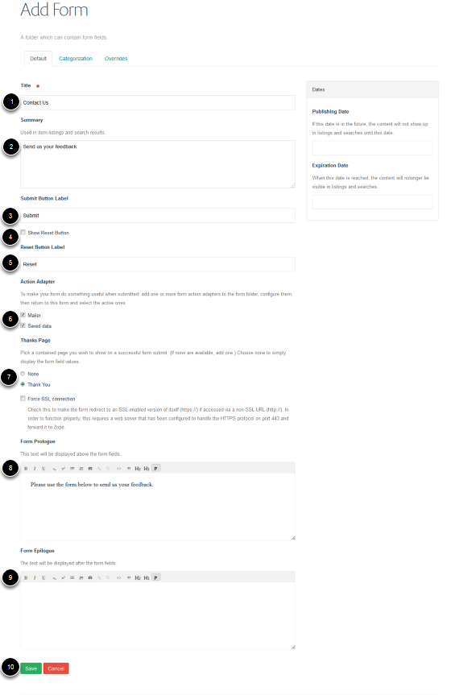

This provides you with an overview of how to create a form.
See also:
Form Data, Add a Field to a Form, Change the Order of Fields, Edit a Form Thank You Page.
Click on the Forms link next to the University logo. If you can’t see the Forms link contact your Editor-in-Chief for access.
Click on Add new... and select Form.
Enter form details: 1. Form title. 2. Summary of the form. 3. Text on button to submit the form. 4. Select if you would like a reset button. 5. Text on reset button. 6. Options to email / save data - see the Forms Data guide for more details. 7. Select if you would like to include a thank you for submitting the form page. You can edit this thank you page - see the Edit a Form Thank You Page guide for details. 8. Select if your form data needs to be be submitted over a secure connection. If your data needs to be submitted over a secure connection save the data (number 6) rather than having it emailed as email is not secure. 9. This text displays before the form fields. 10. Text entered here displays after the form fields. 11. Save your form.
Click on State and select Publish.
You can now add additional fields to the form.
See the Add Fields to a From guide for details.
You can add a link to your form from the left hand navigation of the section you would like to add it to. See the Links in Left Hand Navigation guide for details.